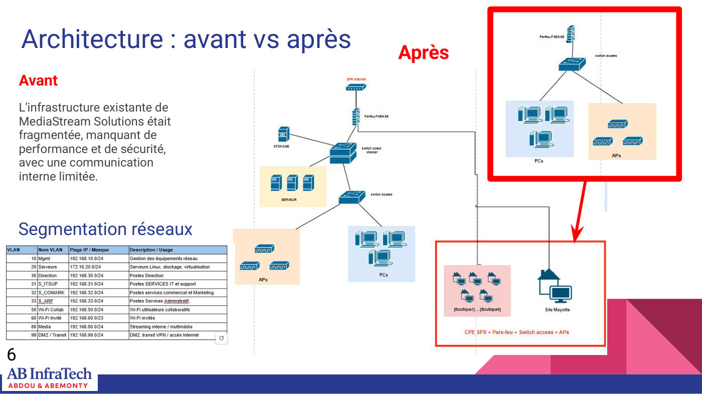
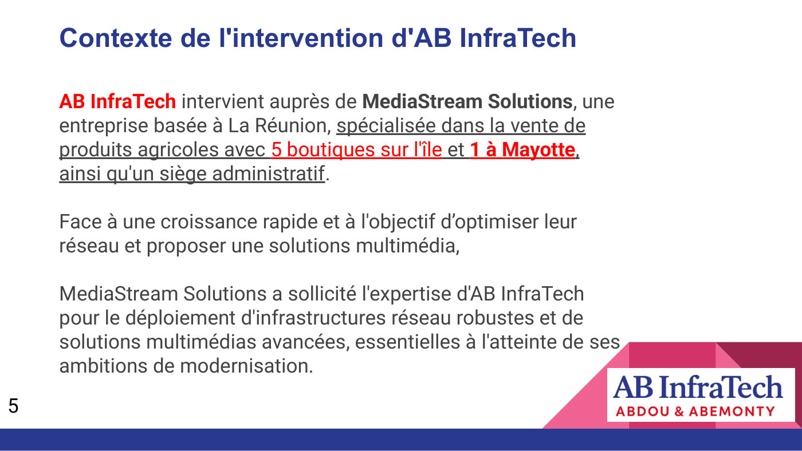
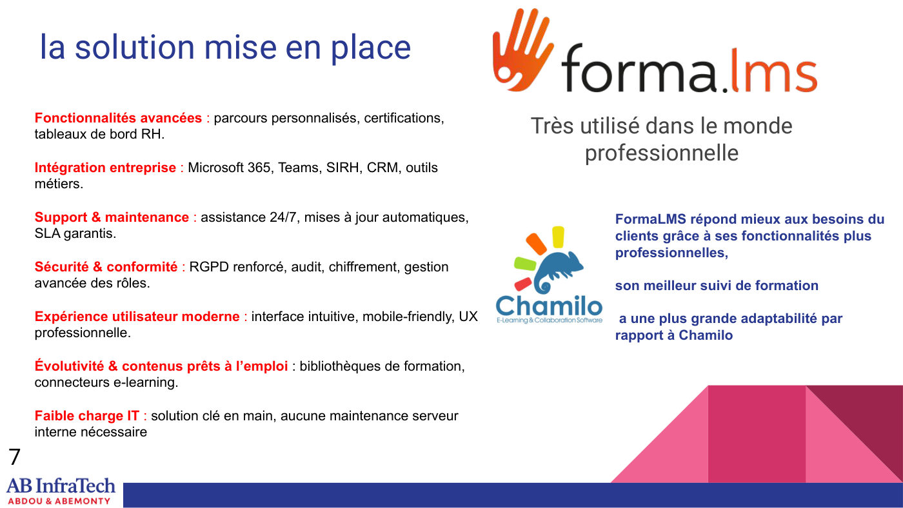
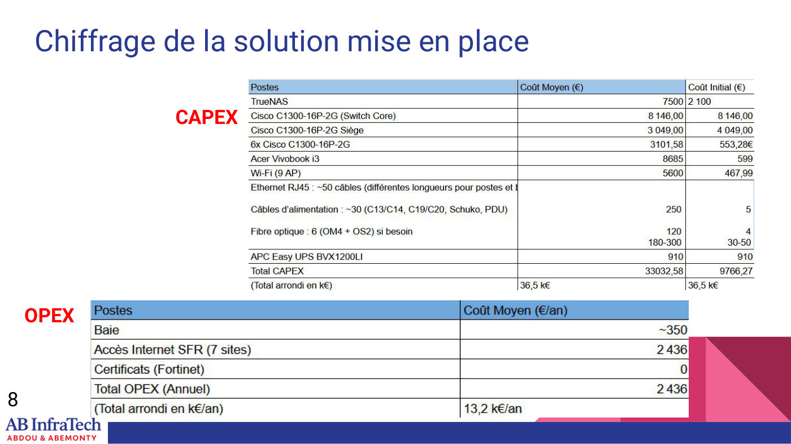
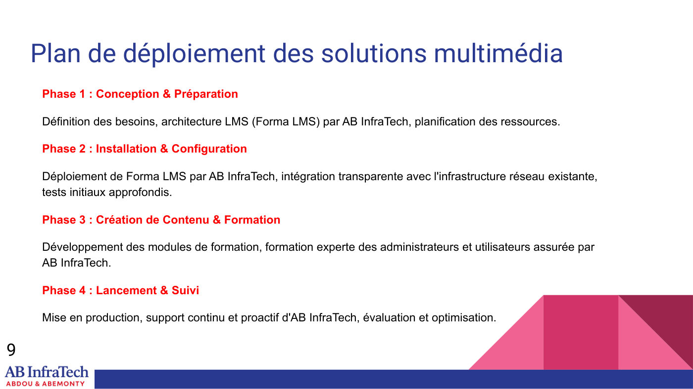
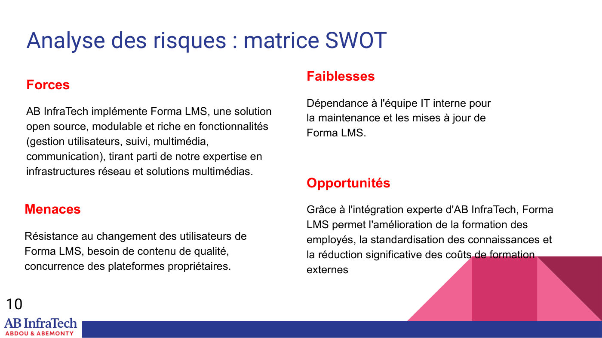

Infrastructure réseau et solution multimédia : AB InfraTech
Dans la peau d'un intégrateur, AB InfraTech, proposer à un client multisite une infrastructure modernisée et une plateforme e-learning.
Équipe : Binôme : ABDOU Imane (cheffe de projet et administratrice réseaux) et ABEMONTY Timothée (administrateur réseaux, déploiement)

Contexte et objectif
Contexte
MediaStream Solutions, entreprise réunionnaise de vente de produits agricoles (5 boutiques sur l'île, 1 à Mayotte et un siège), connaît une forte croissance. Son infrastructure était fragmentée, peu performante, peu sécurisée et la communication interne limitée.
Objectif
Concevoir et déployer une infrastructure robuste, évolutive et sécurisée, et intégrer une solution multimédia avec une plateforme de formation vidéo (LMS).
Ma mission
Mon rôle
En tant que cheffe de projet et administratrice réseaux, j'ai assuré :
- La coordination globale du projet
- La conception technique de l'infrastructure
- Les aspects sécurité de la solution
Travaux réalisés
Diagnostic de l'existant
Analyse de l'architecture « avant » : réseau fragmenté, performances et sécurité insuffisantes.
Nouvelle architecture
Conception de l'architecture « après » avec segmentation des réseaux et tableau de plan d'adressage.
Choix de la plateforme LMS
Comparaison Forma LMS / Chamilo : Forma LMS retenu pour ses fonctionnalités professionnelles, son suivi de formation et son adaptabilité.
Chiffrage
CAPEX (switchs Cisco C1300, TrueNAS, Wi-Fi 9 AP, onduleur APC, câblage, fibre) et OPEX annuel (accès Internet SFR pour 7 sites, baie).
Plan de déploiement et risques
Planning en 4 phases (conception, installation, contenus et formation, lancement et suivi) et matrice SWOT.
Outils et technologies
Illustrations du projet
Images extraites du rapport. Cliquez pour agrandir.





Difficultés et solutions
Résultats obtenus
- Architecture cible segmentée pour les 7 sites
- Solution LMS argumentée et intégrée au plan de déploiement
- Budget d'investissement et de fonctionnement chiffré, risques identifiés
Compétences développées
Compétences
- Conduite de projet et coordination d'équipe
- Conception d'architecture réseau multisite
- Étude technico-économique (CAPEX / OPEX)
- Analyse de risques (SWOT)
- Présentation orale à un client
Ce que ce projet m'a apporté
Piloter ce projet m'a appris à relier technique, budget et besoins métier, et à défendre une solution face à un client.
Envie d'aller plus loin ?
Le document complet détaille toutes les configurations, mesures et analyses.